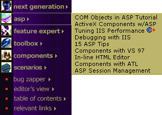
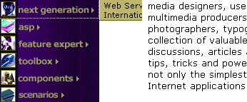
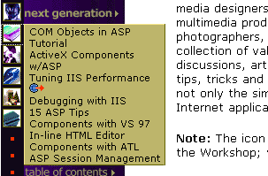
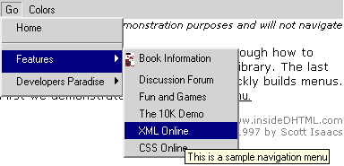

|
| ||
|
| ||
Robert Carter
Technical Writer
MSDN Online
George Young
Web Design Engineer
MSDN Online
September 22, 1998
Back in January, when the Server area of Workshop launched its redesign, George Young and I wrote about the DHTML pop-up menu he created for it. In July, the Server area was assimilated into the major new redesign of the Web Workshop (whose DHTML drop-down menu was partially inspired by the Server menu). We received a lot of mail about the Server menu, though, and because most of the questions were so good, we thought we'd do our own "Web Men Talking" stint and answer them in a follow-up article.
In response to the major questions raised by the first article and code, we (um, George) generated a new version of the pop-up menu that makes customization a lot easier, so much so that your code-challenged narrator can actually write a few paragraphs without having to traipse back to George's office with a list of questions.
For this article, we'll rehash the most common questions we received, and discuss the solutions we developed. Bear in mind that, at least to some of us (read: Robert), this stuff is hard (writing about this stuff reminds me of the Gary Larson cartoon where the student asks to be dismissed because his brain is full). George is an elegant coder, and often tries to accomplish multiple objectives within a single statement. It confuses Robert to no end.
We were surprised at the number of questions we got about positioning where the menus pop up. Then we looked at the code and realized we had given no positioning information whatsoever. The default positioning Microsoft Internet Explorer 4.0 and above relied on fit our needs perfectly, scrolling out immediately adjacent to the image that was clicked on.

Figure 1. Pop-up menu with default positioning
All well and good for us, but anybody that wanted the menu to open elsewhere had to start from scratch. One of the biggest problems our default positioning created was for those folks that tried to implement the pop-up code in a frameset. The code would function, but the menus themselves would be clipped, as shown below.

Figure 2. Pop-up menu getting clipped by frame border
This would occur if you had any windowed element on the page. Java applets, dialog boxes, Microsoft ActiveX controls, and IFRAME elements would all overwrite the pop-up menu. The reason stems from the limitations of the HTML container; no element inside HTML can cross windows. End of story.
Because we didn't feel like taking the time to develop an ActiveX control that could cross a frame border, we repositioned the original pop-up menu to expand just to the right of and below the graphic of a particular area. If the pop-up is still clipped, you can shrink its size to fit the space available, or move the pop-up all the way to the left border.

Figure 3. Pop-up menu repositioned and resized to fit within left frame
This workaround is clearly more awkward. Is it more intuitive to have the pop-up immediately to the right or below the area in question? If it pops up immediately to the right, the text of the area is blocked; if immediately below (and to the right of the graphic), it's unclear which area is being displayed. Nonetheless, it works.
Many of you wrote wondering why our pop-up menu works in Internet Explorer 4.0 (and above) but not Netscape Navigator 4.0 and above. The short answer is because the DHTML implementations are not entirely compatible. We use features and functions of Internet Explorer's DHTML implementation that Netscape doesn't recognize. Sorry.
The code we provided does handle all browser types, though. All browsers that aren't Internet Explorer 4.0-compatible can still load the menu. The only difference is that when a user clicks on one of the graphics, it functions simply as a hyperlink instead of displaying the pop-up menu. You have two options from here. You can develop a TOC page for each section (in our example, Next Generation, Active Server Pages (ASP), Feature Expert, and so on, would each get their own TOC pages), or one generic TOC page with anchors (for example, a generic TOC page entitled TOC.htm; a redirect to the Next Generation section would use the HREF "TOC.htm#nextgen"). While this menu was running on MSDN Online's server section, we used the latter method.
In case cross-browser pop-up menu functionality is a "must-have", we did a quick search of the Web for a couple of examples. Happily, there were a few (we love the Web). The first cross-browser example we found came from one of the best sites out there for learning DHTML, InsideDHTML  . The cross-b rowser example they provide
. The cross-b rowser example they provide  looks similar to one I saw on WebMonkey when the 4.0 browsers first came out. It's snazzy because it opens and closes at the click of a mouse, and thus takes up very little screen real estate when inactive.
looks similar to one I saw on WebMonkey when the 4.0 browsers first came out. It's snazzy because it opens and closes at the click of a mouse, and thus takes up very little screen real estate when inactive.
In addition, a few alert readers pointed out to us that there's been a whole series of articles on a cross-browser pop-up menu implementation over in the DHTML Lab  . Their latest version is 3.04. They keep updating it in response to popular demand. Well worth a visit.
. Their latest version is 3.04. They keep updating it in response to popular demand. Well worth a visit.
Our good friends at Netscape have also done some work in this direction. Although this article refers to the code for a collapsible list  , it should be relatively easy to adapt to a menu inside a table or a frame.
, it should be relatively easy to adapt to a menu inside a table or a frame.
In general, if you want to limit your DHTML functionality to being cross-browser-compatible, we suggest you visit the section of the InsideDHTML site that maintains a cross-browser library  . While you might not take advantage of the entire Internet Explorer DHTML implementation, you might avoid having to maintain multiple versions of code, especially if you don't have to support 3.x versions of Internet Explorer or Navigator, or other browsers that currently don't support DHTML.
. While you might not take advantage of the entire Internet Explorer DHTML implementation, you might avoid having to maintain multiple versions of code, especially if you don't have to support 3.x versions of Internet Explorer or Navigator, or other browsers that currently don't support DHTML.
Another interesting request from our readers was whether we could add more levels to our menus. As a result, they could embed multiple content areas without requiring users to navigate to another page. The DHTML Lab example we referenced above already includes cascading menu support. The InsideDHTML site has another example, and we show a screenshot of their implementation below:

Figure 4. InsideDHTML cascading menu example
And yes, we could do that, but it's not trivial, so we didn't. Instead, because both the InsideDHTML and DHTML Lab folks did our work for us, we'll point you there (say Hi for us). Cross-platform developers beware, though, that the InsideDHTML example only works on Internet Explorer 4.0 and above browsers.
Now that we've described what we did (and didn't) do with the code, I can describe how each of the features are implemented. Since George has found some coding hobby horses to ride in the meanwhile, the code has gotten simpler for you to implement, and tougher for me to explain. Please bear with me.
We'll start with menu.asp. menu.asp begins with our new server-side sniff code, shown below:
function BrowserData(sUA)
{
var iMSIE = sUA.indexOf("MSIE");
this.userAgent = sUA;
this.browser = (iMSIE > -1) ? "MSIE" : "Other";
this.majorVer = parseInt(sUA.substring(iMSIE + 5, iMSIE + 6));
this.getsMenus = ("MSIE" == this.browser && 4 <= this.majorVer);
}
var oBD = new BrowserData(new
String(Request.ServerVariables("HTTP_USER_AGENT")));
First, we do our sniffing within the BrowserData(sUA) function (where sUA is our modified Hungarian notation for UserAgent string). The first line assigns the variable iMSIE to the index of the user agent string (HTTP_USER_AGENT is part of ASP's ServerVariables collection, which is part of the Request object). Remember , the indexOf method returns an integer indicating the beginning of the specified string; if the indicated substring is not part of the specified string, indexOf returns a value of -1. Just for grins, I checked for my user agent strings for each of my copies of Internet Explorer and Navigator, and got the following:
Internet Explorer
Mozilla/4.0 (compatible; MSIE 4.01; Windows NT; ITG-IE401SP1)
Navigator
Mozilla/4.07 [en] (WinNT; I ;Nav)
Next we use the "this" statement to refer to the current object (BrowserData) and assign it a bunch of properties:
<%
if (oBD.getsMenus)
{
Response.Write('<SCRIPT src="/menudemo/popup/menus.js"></script> \n');
Response.Write('<LINK REL="stylesheet" TYPE="text/css" href="menus.css"> \n');
}
%>
The menus.js file is where all the pop-up menu functionality resides, while menus.css supplies the style sheet information. Within menus.js, the major work is done by the DoMenu function. (By the way, if you find my plodding explanations for menus.js tiresome, skip directly to the menus.js file itself: George has done a bang-up job of adding comments, enough so that I fear being redundant in this article.) The first half of DoMenu appears below. It moves from the general (was a menu clicked?) to the specific (if so, which one?) because some actions we want it to take are global (if a menu was open, close it), and some depend on a particular menu (if the user clicked the same menu that was already open, exit the function).
function DoMenu()
{
window.event.cancelBubble = true;
var esrc = window.event.srcelement;
if ("object" == typeof(document.all[sOpenMenuID]))
{
document.all[sOpenMenuID].style.visibility = "hidden";
if (sOpenMenuID == eSrc.id.replace("imgMenuTitle","divMenu"))
{
sOpenMenuID = "";
return false;
}
else
{
sOpenMenuID = "";
}
}
if ("clsMenuTitle" == eSrc.className)
{
window.event.returnValue = false;
.
.
.
The first thing we do is cancel the document onclick event from bubbling up the event hierarchy. Next, we identify what was clicked using the srcElement property, and assign it to the variable eSrc.
The first conditional is a bit of sleight of hand that accomplishes the task of closing any menu that might be open. sOpenMenuID is the variable we use to store the ID of any open menu. We originally assign it to be blank. If no menu is open, sOpenMenuID is blank; if a menu is open, sOpenMenuID holds a string representing the ID of the menu. But we can't simply use the visibility property to hide "all" of the items in the document with the sOpenMenuID identifier; if sOpenMenuID is blank, we would get an error. Instead, we wrap that declaration in a conditional so the visibility property only gets set on "real" objects. The conditional test uses the typeof operator typeof returns one of six strings corresponding to each type of expression Microsoft JScript can recognize. In this case, the visibility property is set only when document.all[sOpenMenuID] is an object (sOpenMenuID becomes an object reference when it is wrapped in the document.all container).
Whew. Please rest awhile--Robert's going to go refill his cup of coffee.
Next, now that we know we had a menu open, we ask whether the user clicked the same menu item again. If they did, we reassign sOpenMenuID to be a blank string and exit the function; our work is done. But again fancy-pants Young made things interesting. The comparison test in the conditional was multi-agenda'd.
Remember that the pop-up menu is activated from a table populated by a bunch of images. Each image in the table has its own ID. A user that clicks on the "Next Generation" image clicks on an element with an ID value of "imgMenuTitle1". Each menu image has an ID that begins with "imgMenuTitle" and closes with a unique integer.
<TD ALIGN="left" VALIGN="top"> <A href="http://www.microsoft.com/workshop/server/toc.asp#nextgen&"><img WIDTH="140" HEIGHT="27" BORDER="0" ALIGN="top" ALT="NextGeneration" ID="imgMenuTitle1" CLASS="clsMenuTitle" src="server-nextgen-navb.gif"></a> </TD>
A menu is associated with each image, and each menu is stored as a unique DIV in the menus.inc include file. Each menu DIV also has an ID, in this case the string "divMenu" followed by an integer. Conveniently (and, yes, by design), the integer for a menu matches the integer for its associated image. The "Next Generation" menu DIV thus looks like the following:
<DIV ID="divMenu1" CLASS="clsMenu"> <A href="http://www.microsoft.com/nextgen/pws.asp">web Services for PCs</A><BR> <A href="http://www.microsoft.com/nextgen/nextgen.asp">international ASP</A><BR> </DIV>
To recap, the user has clicked on a menu image which has an ID "imgMenuTitle" plus an integer. What we want to know is whether the image that was just clicked corresponds to the menu that was last opened (that is, if the "Next Generation" menu was last opened, did the user click on the "Next Generation" image again?). Since we know that the numbers for the menu images and DIVs are identical, if we could just switch out the "imgMenuTitle" string and substitute "divMenu" instead, we're golden. George implemented both the comparison and the switch-out in one fell swoop, avoiding the need for creating a temporary variable and then performing some string manipulations on it, by using the replace method on the element's id property.
if (sOpenMenuID == eSrc.id.replace("imgMenuTitle","divMenu"))
If it turns out that the menu image just clicked was for the same menu that was just open, we reset sOpenMenuID to a blank string and exit the function. If the menu image clicked was different, we simply reset sOpenMenuID to a blank string (if we need to, we'll re-establish its value later; since everything hinges on sOpenMenuID, we want to make sure we don't inadvertently store a value there that screws up the menu functionality later).
So many words, so little code...
Now that any menus that were already open have been closed, and the menu image that was clicked on needs to be opened, we can talk about the rest of DoMenu:
(DoMenu cont'd)
if ("clsMenuTitle" == eSrc.className)
{
window.event.returnValue = false;
sOpenMenuID = eSrc.id.replace("imgMenuTitle","divMenu");
if ("object" == typeof(document.all[sOpenMenuID]))
{
var eMenu = document.all[sOpenMenuID];
iChunk = iChunkStep;
var eTR = eSrc.parentElement.parentElement.parentElement;
var eTABLE = eTR.parentElement.parentElement;
if ("right" == sMenuPos)
{
eMenu.style.left = eTABLE.offsetLeft + eSrc.width;
eMenu.style.top = eTABLE.offsetTop + eTR.offsetTop;
}
else
{
eMenu.style.left = eTABLE.offsetLeft + 26;
eMenu.style.top = eTABLE.offsetTop + eTR.offsetTop + eSrc.height;
}
eMenu.style.clip = "rect(0 0 0 0)";
eMenu.style.visibility = "visible";
return window.setTimeout("ShowMenu(" + eMenu.id + ")", iChunkDelay);
}
}
We start with a double-check--are we sure a menu image was clicked (developers are so paranoid!)--by testing to make sure the class name of the clicked object matches the class name of the menu images, "clsMenuTitle." If yes, the first thing we do is cancel the default event associated with the image (an HREF that would send the user to that section's TOC page). In effect, we're saying "No, no, no, stay right there; because you use such a wonderful browser, we'll bring the menu to you."
We then reassign the menu DIV ID to sOpenMenuID (I'm not going into how again), and (for crying out loud) introduce the same type of conditional we discussed before. So if we're really dealing with a menu image, we're gonna start some menu-drawing real soon now.
After we declare eMenu as an object reference to the menu object (again, by wrapping it in the document.all object), we're going to get our bearings on the rendered page, which we'll do by figuring out the location of the row in the table, and the table on the page. To figure out which row we're in, we assign eTR to the great-grandparent element of eSrc (the element that was clicked). (If you look at the code of each reference, we have an image <IMG> inside an anchor <A> inside a table cell <TD>, which is, finally, inside great-grandma <TR>. I've reproduced it below and higlighted the parentage elements).
<TR> <TD ALIGN="left" VALIGN="top"> <A href="http://www.microsoft.com/workshop/server/toc.asp#nextgen"><img WIDTH="140" HEIGHT="27" BORDER="0" ALIGN="top" ALT="Next Generation" ID="imgMenuTitle1" CLASS="clsMenuTitle" src="server-nextgen-navb.gif"></a> </TD> </TR>
Next, we take the grandfather of the TR tag to position the TABLE on the page. Why not the parent element, you ask? Well, because the parent of the table row tag is actually the TBODY tag, which is implicit when you create a table, whether you actually use it or not. Even so, we thought that the position of TBODY, if not declared, would default to the position of the TABLE tag, rendering our oversight a distinction without a difference. Wrong again. Rather than spin our wheels for a while longer trying to figure out why, we punted and used the grandparent element. So should you.
Now that we have our two positioning keys (the TR and TABLE locations), we can use them to draw our menus. And we've given you lots of choices about the display, both location and the display animation itself, which are set by assigning string values to two variables, sMenuPos and sMenuStyle.
sMenuPos refers to where the pop-up menu will be drawn relative to the clicked menu graphic: selecting "right" causes the pop-up to be drawn adjacent to the table at the same height as the clicked image (see Figure 1); "below" (or anything else, really) causes the pop-up to be drawn immediately below the image selected, and immediately to the right of the graphic (so any images below aren't obscured, as is shown in Figure 3).
if ("right" == sMenuPos)
{
eMenu.style.left = eTABLE.offsetLeft + eSrc.width;
eMenu.style.top = eTABLE.offsetTop + eTR.offsetTop;
}
else
{
eMenu.style.left = 36;
eMenu.style.top = eTABLE.offsetTop + eTR.offsetTop + eSrc.height;
}
For the "right" positioning style, we add the eTABLE left offset to the width of the image to set the, for lack of a better term, "x" coordinate; adding the eTABLE top offset to the eTR top offset gives us our "y" coordinate. Otherwise, we use a fixed positioning of 36 pixels for "x" and add the eTABLE and eTR top offsets to the height of the eSrc element for "y."
Given our "x" - "y" starting point, we now start drawing the rectangle that will hold the menu:
eMenu.style.clip = "rect(0 0 0 0)";
eMenu.style.visibility = "visible";
return window.setTimeout("ShowMenu(" + eMenu.id + ")", iChunkDelay);
We initialize the menu rectangle with clip of zero dimension, make it visible, and initiate our display, which we'll control and effectively animate with the setTimeout method. setTimeout calls the function ShowMenu, and the iChunkDelay variable is assigned initially to 10, which means we'll evaluate ShowMenu() in 10 milliseconds.
ShowMenu(eMenu) calls yet another function, GetShowStyle(), and continues to invoke the setTimeout method until iChunk exceeds 100; iChunk is incremented by iChunkStep with each pass through ShowMenu()(the larger the value of iChunkStep, the fewer cycles through ShowMenu(eMenu)).
function ShowMenu(eMenu)
{
eMenu.style.clip = GetShowStyle();
if (100 >= iChunk)
{
window.setTimeout("ShowMenu(" + eMenu.id + ")", iChunkDelay);
}
iChunk += iChunkStep;
}
GetShowStyle() has three display options, effectively equating to the type of "pan" you want to simulate: "down", "across", and "diagonal." As you can see from the code snippet below, the different settings of sMenuStyle control which dimension is unfurled in the display animation ("down", for example, sets the top at 0, right at the menu's full width (100%), bottom in iChunk percentage increments, and left at 0).
function GetShowStyle()
{
if ("down" == sMenuStyle) return "rect(0 100% " + iChunk + "% 0)";
else if ("across" == sMenuStyle) return "rect(0 " + iChunk + "% 100% 0)";
else if ("diagonal" == sMenuStyle) return "rect(0 " + iChunk + "% " + iChunk + "% 0)";
else return "rect(0 100% " + iChunk + "% 0)";
}
We encourage you to play with all the effects, especially the settings of iChunk, iChunkStep, and iChunkDelay, to see how they affect the menu animation. Finally, if you want to control the colors of the drop-down box, its width, or other parameters, you can mess with the menus.css file.
So much for a short, succinct update of the original Pop-up Menu article! Jeez. We've covered a lot of programming concepts in our descriptions of the code, from ASP server objects to Jscript-type operators to DHTML methods. As a result, I've droned on longer than I might otherwise care to, and the term "feature bloat" has some resonance for me.
Good code can be dense, though. There are many instances in our pop-up menu where George killed a few birds with a single line of code, and Robert was left to meander around and attempt a cohesive narrative. It feels like giving driving directions to my house; it seems more complicated to give the directions than drive the car, especially the critical little turns that are so easy to miss.
All the same, thanks for bearing with us. Hopefully this time around we've given you all the tools, and the knowledge, you need to implement our pop-up menu on your site.
Did you find this material useful? Gripes? Compliments? Suggestions for other articles? Write us!
© 1999 Microsoft Corporation. All rights reserved. Terms of use.